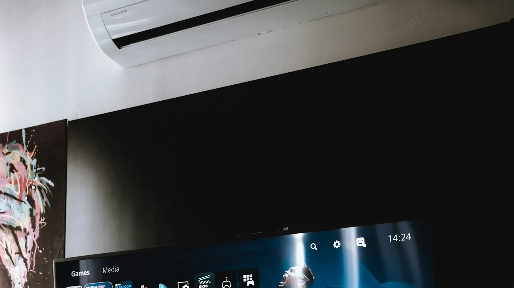

Fler svenska hushåll än någonsin väljer bort dyra kabel- och parabolabonnemang till förmån för IPTV. Men innan du köper IPTV i Sverige är det värt att förstå vad du faktiskt betalar för — kanalutbud, teknik, lagen och vad som skiljer en pålitlig leverantör från en riskabel. Den här guiden går igenom precis det: vad IPTV är, vilka fördelar det ger jämfört med traditionell TV, vilket innehåll du kan förvänta dig, hur installationen går till, och hur du väljer rätt tjänst utan att gå i de vanligaste fällorna.
Innehåll i guiden
Vad är IPTV?
IPTV (Internet Protocol Television) är ett sätt att leverera TV-kanaler och innehåll över en vanlig internetuppkoppling istället för via marknät, kabel eller satellit. Istället för att signalen skickas via en parabolantenn eller ett kabelnät strömmas den som datapaket, precis som video från vilken streamingtjänst som helst. Det innebär att du kan titta på live-TV, sport och en video-on-demand-katalog med filmer och serier via en app på din Smart-TV, mobil, dator eller streaming-box.
Tekniskt sett behöver du bara tre saker för att komma igång: en stabil internetuppkoppling, en kompatibel enhet (nästan vilken skärm som helst duger) och ett abonnemang hos en IPTV-leverantör. Inga tekniker behöver komma hem, ingen parabol behöver monteras på taket, och ingen ny kabeldragning krävs.
Varför väljer fler IPTV i Sverige?
Efterfrågan på IPTV i Sverige har ökat stadigt de senaste åren, drivet av några tydliga trender. För det första har traditionella TV-paket via kabel-tv-bolag blivit allt dyrare samtidigt som utbudet ofta känns statiskt och otidsenligt. För det andra har svenskar i allt högre grad vant sig vid streamingtjänsters flexibilitet — ingen bindningstid, ingen installationstekniker, och möjlighet att säga upp när som helst.
En annan starkt bidragande faktor är den stora gruppen svenskar som bor eller reser utomlands. För den som flyttat till Spanien, Thailand eller USA men vill fortsätta följa Melodifestivalen, Allsvenskan eller SVT:s nyhetssändningar är IPTV ofta det enda praktiska alternativet, eftersom det fungerar var som helst i världen så länge internetuppkopplingen är stabil.
Slutligen spelar priset en stor roll. Ett komplett IPTV-abonnemang med tusentals kanaler och ett stort filmbibliotek kostar ofta mindre per månad än ett enda premiumpaket hos ett traditionellt kabel-tv-bolag — utan att kompromissa med utbudet.
Fördelar jämfört med traditionell TV
Skillnaden mellan IPTV och traditionell TV handlar i grunden om flexibilitet, pris och utbud. Tabellen nedan sammanfattar de viktigaste skillnaderna:
| Egenskap | IPTV | Traditionell TV (kabel/parabol) |
|---|---|---|
| Installation | Ingen tekniker, klart på minuter | Kräver ofta parabol/kabeltekniker |
| Bindningstid | Ofta ingen bindningstid | Vanligtvis 12–24 månader |
| Antal kanaler | Ofta 10 000–50 000+ | Vanligtvis 50–200 |
| Filmer/serier på begäran | Stort VOD-bibliotek ingår | Kräver ofta separata tillägg |
| Användning utomlands | Fungerar globalt via internet | Fungerar inte utanför Sverige |
| Pris per månad | Från cirka 79–199 kr | Ofta 300–800 kr eller mer |
| Multipla enheter | 1–4 enheter i samma abonnemang | Extra box krävs per TV |
Kanaler och innehåll
Det som avgör om en IPTV-tjänst är värd sitt pris är i slutändan innehållet. En bra svensk IPTV-tjänst ska täcka fyra huvudkategorier: sport, film, serier och kvalitet i form av 4K-streaming.

Sport
Sport är för många svenskar den viktigaste anledningen att teckna ett IPTV-abonnemang. En komplett tjänst bör inkludera Allsvenskan, Hockeyallsvenskan, Premier League, Champions League och stora internationella turneringar som VM och EM, tillsammans med kanaler som C More Sport, Viaplay Sports, Eurosport och TV4 Sport. Vill du fördjupa dig i hur du ser svensk fotboll live kan du läsa vår guide om att se Allsvenskan via IPTV.
Filmer
Ett gediget filmbibliotek innebär tusentals titlar på begäran, från nya biopremiärer till klassiker, uppdaterat kontinuerligt. Leta efter tjänster som erbjuder både aktuella releaser och ett brett utbud av genrer — allt från svensk film till internationella Hollywood-produktioner.
Serier
Utöver linjära kanaler bör ett bra IPTV-paket inkludera ett stort utbud av TV-serier på begäran, inklusive populära internationella produktioner och nordiska serier. Många tjänster erbjuder även catch-up TV, vilket gör att du kan se program som sänts de senaste dagarna även om du missade det direkt.
4K Streaming
4K-upplösning ger fyra gånger fler bildpunkter än vanlig HD och gör stor skillnad särskilt vid sportsändningar och naturfilmer på en modern TV. För stabil 4K-streaming utan buffring rekommenderas en internetuppkoppling på minst 25 Mbit/s. En seriös leverantör bör kunna erbjuda ett växande urval av 4K-kanaler och 4K-innehåll på begäran som en del av standardabonnemanget, utan dolda tilläggsavgifter.
Kompatibla enheter
En av de största fördelarna med IPTV är att tjänsten fungerar på nästan vilken skärm som helst du redan äger. Du behöver sällan köpa ny utrustning för att komma igång:
Smart-TV
Samsung, LG, Sony och andra Smart-TV-modeller stödjer IPTV-appar direkt. Läs våra guider för Samsung TV och LG TV.
Android TV & Box
Android TV, Google TV och Android-boxar kör IPTV-appar smidigt. Se vår guide för installation på Android TV.
Apple TV
Apple TV stödjer IPTV via dedikerade appar från App Store. Följ vår steg-för-steg-guide för installation på Apple TV.
Amazon Fire Stick
En av de mest populära enheterna för IPTV tack vare enkel sideladdning av appar. Läs vår guide för installation på Fire Stick.
Mobil & surfplatta
iOS- och Android-appar gör att du kan streama var du än befinner dig, hemma eller på resande fot.
Dator & webbläsare
De flesta IPTV-tjänster går även att titta på direkt i webbläsaren på PC eller Mac, utan installation.
Hur fungerar installationen?
Att komma igång med IPTV är betydligt enklare än en traditionell kabel- eller parabolinstallation, och kräver normalt ingen tekniker. I de flesta fall följer processen samma grundsteg oavsett vilken enhet du använder:
1. Teckna ett abonnemang. Välj antal enheter och abonnemangslängd hos din leverantör och slutför köpet.
2. Få dina inloggningsuppgifter. Du får normalt ett Xtream Codes-konto eller en M3U-spellista, samt eventuella inställningar för EPG (elektronisk programguide) via e-post eller WhatsApp inom några minuter.
3. Ladda ner en spelarapp. Populära appar som IPTV Smarters Pro, TiviMate eller GSE Smart IPTV finns tillgängliga på de flesta plattformar och laddas ner via respektive app store, eller sideladdas på enheter som Fire Stick.
4. Logga in och börja titta. Ange dina uppgifter i appen så laddas kanallistan och EPG:n automatiskt. Hela processen tar normalt under tio minuter.
Installationsstegen skiljer sig något åt beroende på enhet. Vi har skrivit detaljerade guider för de vanligaste plattformarna: Fire Stick, Samsungs Smart-TV, LG:s Smart-TV, Apple TV och Android TV. Osäker på vilken enhet du redan har hemma räcker för IPTV? Vår hårdvaruranking av de bästa streamingenheterna går igenom för- och nackdelar med varje alternativ. Har du frågor längs vägen finns vårt team tillgängligt via vår kontaktsida.
Är IPTV lagligt?
Ja — IPTV i sig är helt lagligt i Sverige. Tekniken är bara ett sätt att leverera TV-signaler över internet, precis som vilken streamingtjänst som helst. Det som avgör lagligheten är om leverantören har de upphovsrättsliga licenser som krävs för att distribuera kanalerna och innehållet i fråga. Det är leverantörens ansvar att teckna licensavtal med rättighetsinnehavarna — inte konsumentens.
För att skydda dig som köpare bör du alltid kontrollera att leverantören har ett registrerat bolag, tydliga kontaktuppgifter, vanliga betalningsmetoder och skriftliga abonnemangsvillkor. Från och med 1 juli 2026 gäller dessutom ny svensk lagstiftning med skärpta krav på registrering och licensiering för IPTV-leverantörer. Vill du läsa mer i detalj om vad lagen faktiskt säger, och hur du kan avgöra om en tjänst är laglig, rekommenderar vi vår fördjupade artikel: Är IPTV lagligt i Sverige 2026?
Hur väljer man rätt IPTV?
Med ett stort antal leverantörer på marknaden kan det vara svårt att veta vem man ska lita på. Använd följande kriterier för att jämföra alternativ innan du bestämmer dig:
Licens och transparens. Leverantören ska ha ett registrerat bolag, synliga kontaktuppgifter och tydliga villkor.
Kanalutbud och kvalitet. Kontrollera att svenska och nordiska kanaler ingår, samt hur många kanaler som finns i HD respektive 4K.
Drifttid och stabilitet. Fråga om leverantörens genomsnittliga drifttid — en seriös aktör vet svaret och siktar på minst 99 %.
Support. Kontrollera om support finns dygnet runt, och testa gärna genom att skicka ett meddelande innan köp.
Pris i förhållande till utbud. Jämför pris per månad mot antal kanaler, VOD-bibliotek och antal enheter som ingår.
Möjlighet till gratis test. En leverantör som är trygg med sin kvalitet erbjuder ofta ett gratis test innan köp.
| Abonnemang | Pris | Pris/månad | Bäst för |
|---|---|---|---|
| 1 månad | 99 kr | 99,00 kr | Testa tjänsten kort period |
| 3 månader | 249 kr | 83,00 kr | Prisvärt utan lång bindning |
| 6 månader | 449 kr | 74,83 kr | Mest populära valet |
| 12 månader | 749 kr | 62,42 kr | Bästa värdet över tid |
Priser avser SveaStreams standardabonnemang för 1 enhet. Se alla priser och paket för fler enheter och aktuella erbjudanden.
Vanliga misstag
Många nya IPTV-köpare gör samma misstag, vilket ofta leder till besvikelse eller en tjänst som plötsligt slutar fungera. Undvik dessa fallgropar:
Välja enbart efter lägsta pris
Ett extremt lågt pris är ofta ett tecken på en olicensierad tjänst utan riktig support eller stabil infrastruktur.
Inte testa tjänsten innan köp
Att hoppa över ett gratis test innebär att du inte vet hur tjänsten presterar på din egen uppkoppling förrän du redan betalat.
Ignorera abonnemangsvillkoren
Utan att läsa villkoren riskerar du att missa dolda bindningstider, automatiska förnyelser eller begränsad ångerrätt.
Otillräcklig internethastighet
Att köpa ett 4K-abonnemang med en långsam eller instabil uppkoppling leder ofta till konstant buffring och besvikelse.
Betala via ospårbara metoder
Betalning via kryptovaluta eller anonym banköverföring ger dig sämre konsumentskydd om något går fel.
Redo att köpa IPTV i Sverige?
SveaStream erbjuder 50 000+ kanaler, 80 000+ filmer och serier, 4K-streaming och svensk support dygnet runt — helt utan bindningstid. Prova gratis i 24 timmar innan du bestämmer dig.
Vanliga frågor om att köpa IPTV i Sverige
Vad kostar det att köpa IPTV i Sverige?
En laglig IPTV-tjänst i Sverige kostar normalt mellan 79 och 249 kronor per månad beroende på antal enheter och abonnemangslängd. Längre abonnemang, till exempel 6 eller 12 månader, ger vanligtvis 20–40 % lägre månadskostnad än ett löpande månadsabonnemang. Misstänkt låga priser under 50 kronor för "alla kanaler i världen" är ofta ett tecken på en olaglig tjänst.
Är det säkert att köpa IPTV online?
Ja, förutsatt att du köper från en registrerad leverantör med tydliga kontaktuppgifter, vanliga betalningsmetoder som kort, Swish eller PayPal, och skriftliga abonnemangsvillkor. Undvik leverantörer som endast accepterar kryptovaluta eller saknar spårbara företagsuppgifter.
Vilken IPTV-tjänst är bäst i Sverige 2026?
Den bästa IPTV-tjänsten kombinerar ett brett kanalutbud med svenska och nordiska kanaler, stabil drifttid, 4K-streaming, svensk kundsupport och en laglig licensierad verksamhet. SveaStream uppfyller samtliga dessa kriterier med 50 000+ kanaler, 99,9 % drifttid och support dygnet runt via WhatsApp.
Behöver jag en särskild box eller router för att använda IPTV?
Nej, i de flesta fall räcker en vanlig hemmarouter med en stabil internetuppkoppling. IPTV fungerar direkt via en app på Smart-TV, mobil, surfplatta, dator, Amazon Fire Stick, Apple TV, Android TV-box eller Chromecast.
Kan jag testa IPTV innan jag köper?
Ja. Seriösa leverantörer, inklusive SveaStream, erbjuder ett gratis test på begäran innan du binder dig till ett abonnemang, så att du kan kontrollera streamingkvalitet och stabilitet på din egen uppkoppling.
Hur många enheter kan jag använda samtidigt?
De flesta IPTV-abonnemang tillåter mellan 1 och 4 samtidiga anslutningar beroende på vilket paket du väljer. Vill du titta på olika kanaler i olika rum samtidigt behöver du ett abonnemang med stöd för minst 2 enheter.
Fungerar IPTV med min befintliga internetuppkoppling?
IPTV fungerar med de flesta bredbands- och fiberuppkopplingar. För stabil HD-streaming rekommenderas minst 10–15 Mbit/s, och för 4K-streaming bör hastigheten helst ligga över 25 Mbit/s.
Vad händer om IPTV-tjänsten buffrar eller slutar fungera?
Hos en seriös leverantör ska buffring vara ett undantag, eftersom infrastrukturen är dimensionerad för belastning. Uppstår problem ska kundsupport kunna felsöka via WhatsApp eller chatt inom några minuter. Återkommande buffring är ofta ett tecken på en underdimensionerad eller olaglig tjänst.
Kan jag säga upp mitt IPTV-abonnemang när som helst?
Ja, hos en laglig leverantör utan bindningstid kan du vanligtvis avsluta ditt abonnemang när som helst utan uppsägningsavgift. Kontrollera alltid abonnemangsvillkoren innan köp för att bekräfta att det inte finns dolda bindningstider.
Är IPTV lagligt att köpa och använda i Sverige?
Ja, IPTV är helt lagligt i Sverige så länge leverantören har de upphovsrättsliga licenser som krävs för det innehåll som distribueras. Det är leverantörens ansvar att inneha korrekta licensavtal, inte konsumentens. Läs mer i vår fördjupade guide om IPTV och lagen 2026.
Slutsats
Att köpa IPTV i Sverige 2026 är för de flesta hushåll ett enkelt sätt att få tillgång till fler kanaler, bättre bildkvalitet och ett större filmbibliotek — till ett lägre pris än traditionell kabel-TV. Nyckeln är att välja en licensierad leverantör med transparent prissättning, riktig svensk support och en möjlighet att testa tjänsten innan du binder dig. Undvik misstaget att välja enbart efter lägsta pris, och kontrollera alltid att leverantören uppfyller kraven i den nya lagstiftningen.
Vill du komma igång direkt? Utforska SveaStreams priser och paket, eller läs fler guider på vår blogg om allt från installation till lagen kring IPTV i Sverige.
Kom igång med SveaStream idag
50 000+ kanaler, 4K-streaming och svensk support dygnet runt. Ingen bindningstid — avsluta när du vill.